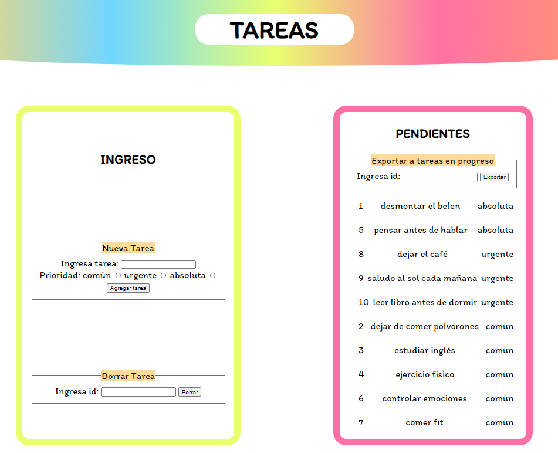
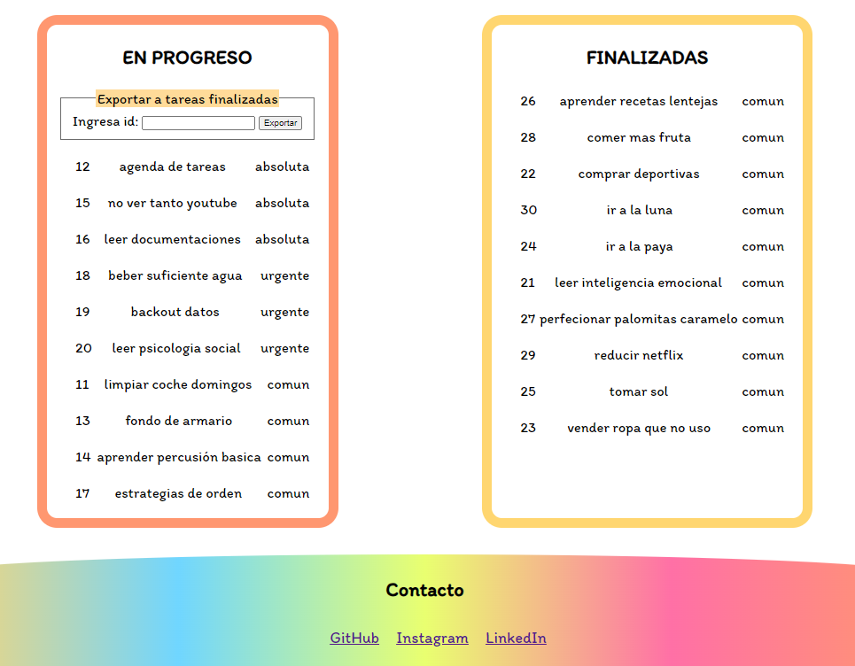

Proyecto Tareas
Existe una sección para el igreso y el borrado de las tareas, y otras tres secciones que recogen las tareas pendientes por hacer, en progreso, y finalizadas. RWD para ordenador, tablet, smartphone...
Posibilidad de mover las tareas a las distintas secciones una vez estas cambian de estado.